Outdoorsy Badges
Some of my favorite leisure activities include traveling and exploring nature. This icon set is inspired by my love of the Great Outdoors and my passion for new adventures. They're more badges than they are icons, really. They were designed to resemble nature patches and stickers of National Parks. If you love this set, you can click here to download it for free!
Inspired by Alberta, one of places I'd like to visit
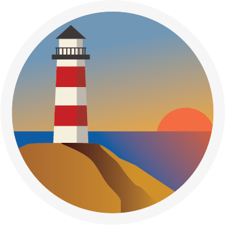A lighthouse during sunset hours
Inspired by Alberta, one of places I'd like to visit
A lighthouse during sunset hours
Snowcapped mountains in the distance
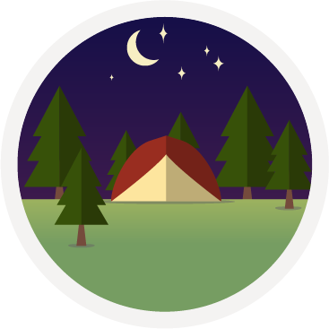An activity I'd want to do one day: camp under the night sky
Snowcapped mountains in the distance
An activity I'd want to do one day: camp under the night sky
Two Tone Icons
I love two tone icons more than any other style. They're the perfect blend of simplicity and sophistication in my opinion. I created a blue icon set in the two tone style, which you can download for free by clicking here.
Weatherdog Icons
I designed a set of icons for a weather website built by my colleague. I went for a simple and flat design, utilizing some gradients. The idea was to make a set of icons that were colorful and vibrant like the website itself. The application is currently in beta but is a working a product. This set is not available for download.
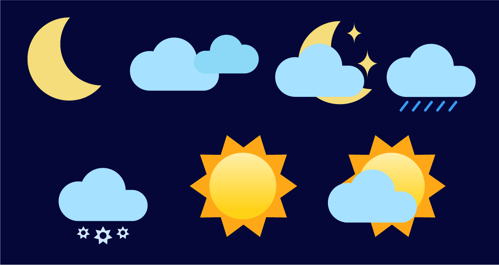Long Shadow Design Process Icons
Icons with long shadows have been really popular so I decided to create my own set for my personal portfolio. These icons are about the design process itself and were featured in my physical portfolio for interviews. You can download the set here.
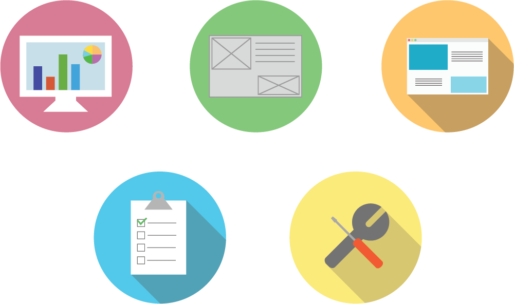Vector Art
My vector pieces are designed using Illustrator. These assets were made for a few campaigns in the past, but some are made just for fun. I always try to challenge myself by stepping out of my comfort zone and trying new styles.
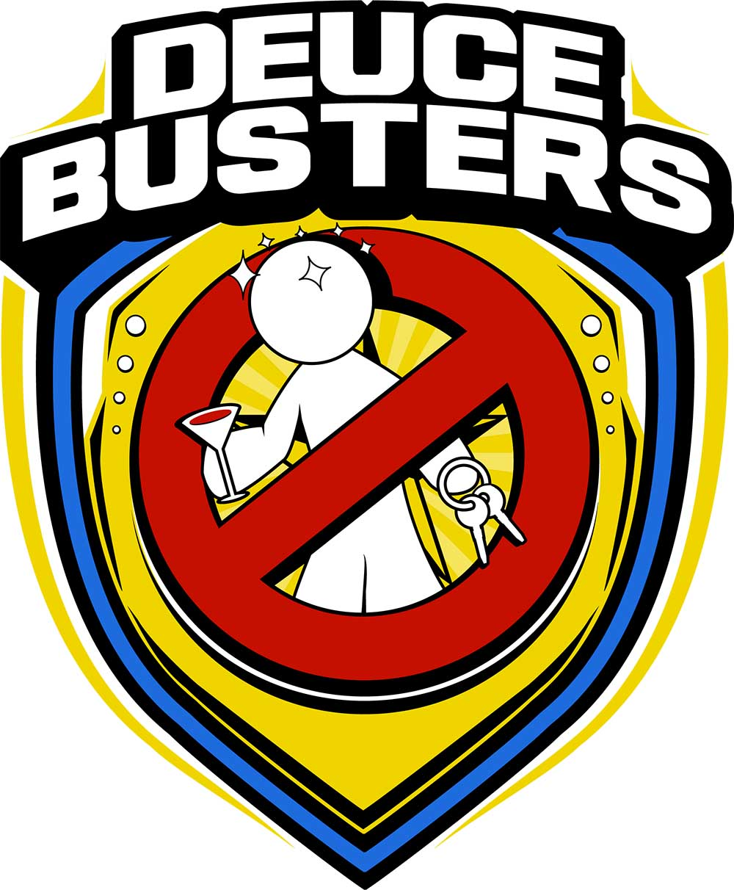A design I created for a CHP anti-drinking and driving campaign which was inspired by the Drunk Busters goggle
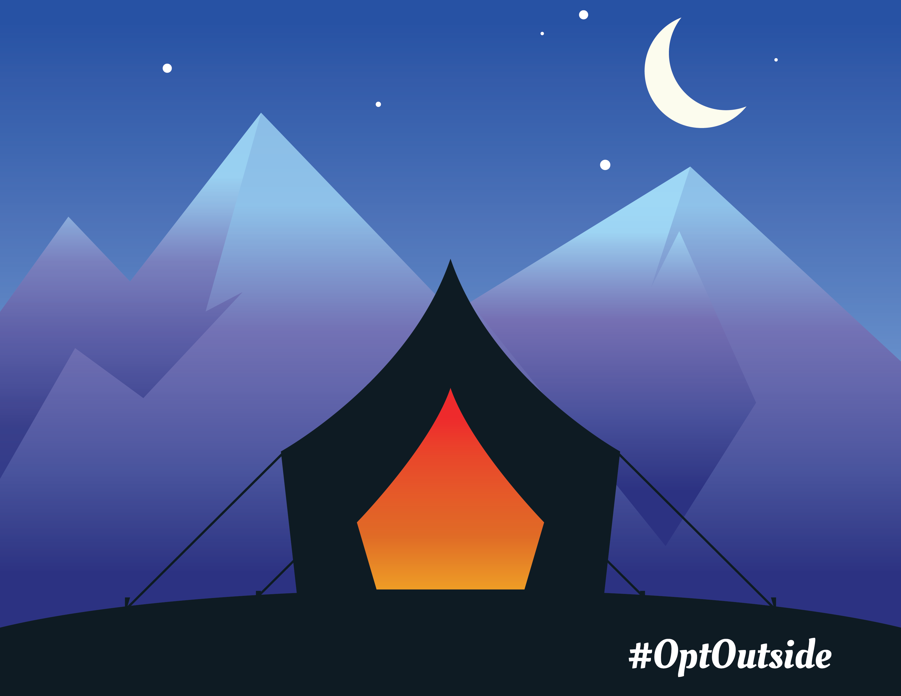An illustration inspired by the REI #optoutside campaign

One of my first vector illustrations
Cintiq Paintings
I use a Wacom Cintiq 13HD tablet to do my painting. I'm a traditional 2D artist, but I enjoy bringing my talents to the digital world (it saves me money on art supplies). I am very much into caricatures, portraits, and character design.

Abel Tesfaye or better known as The Weeknd
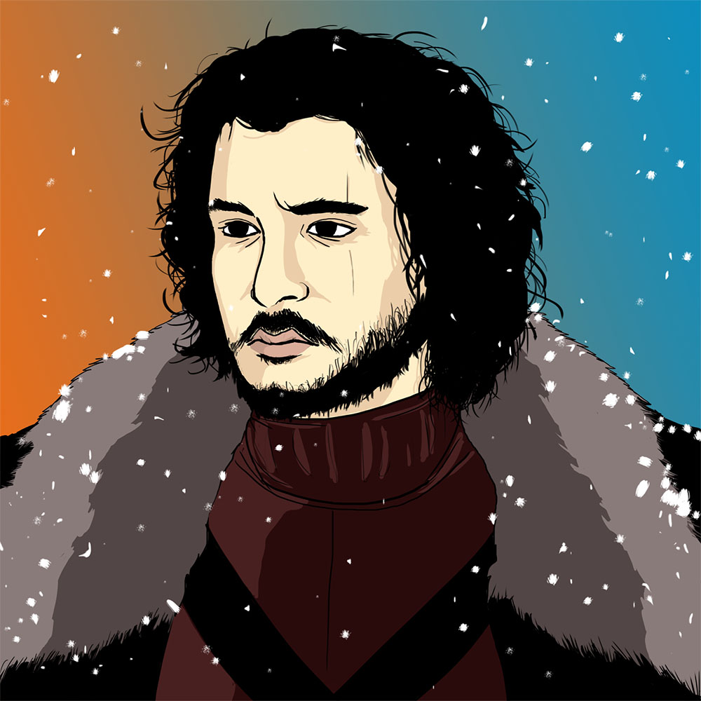The guy that knows nothing
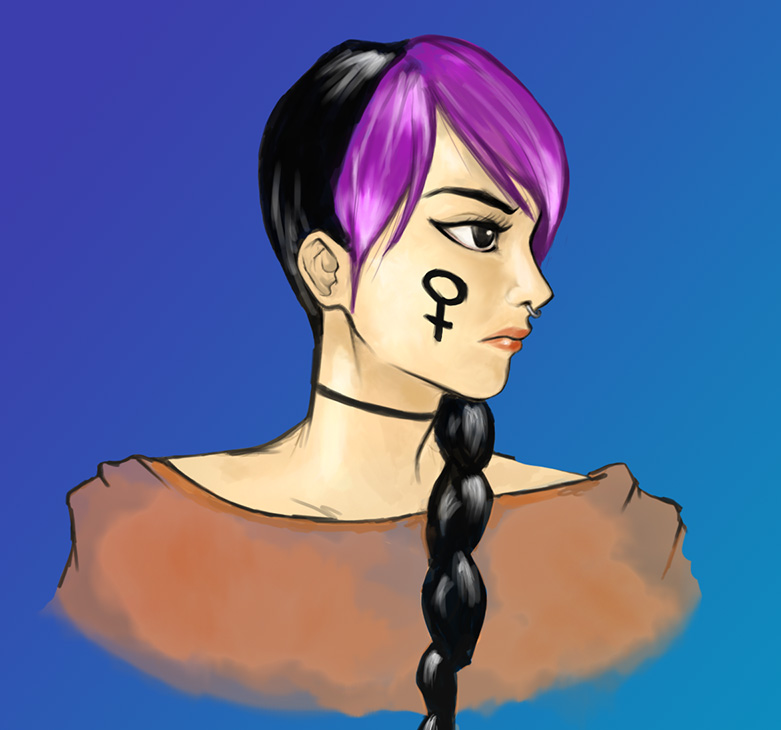Warrior
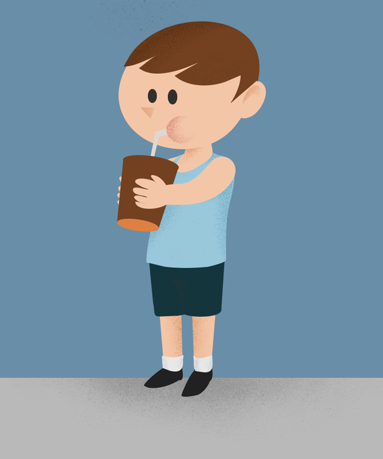I tried my hand at editorial-style illustrations and came up with this

Okoye from the Black Panther movie
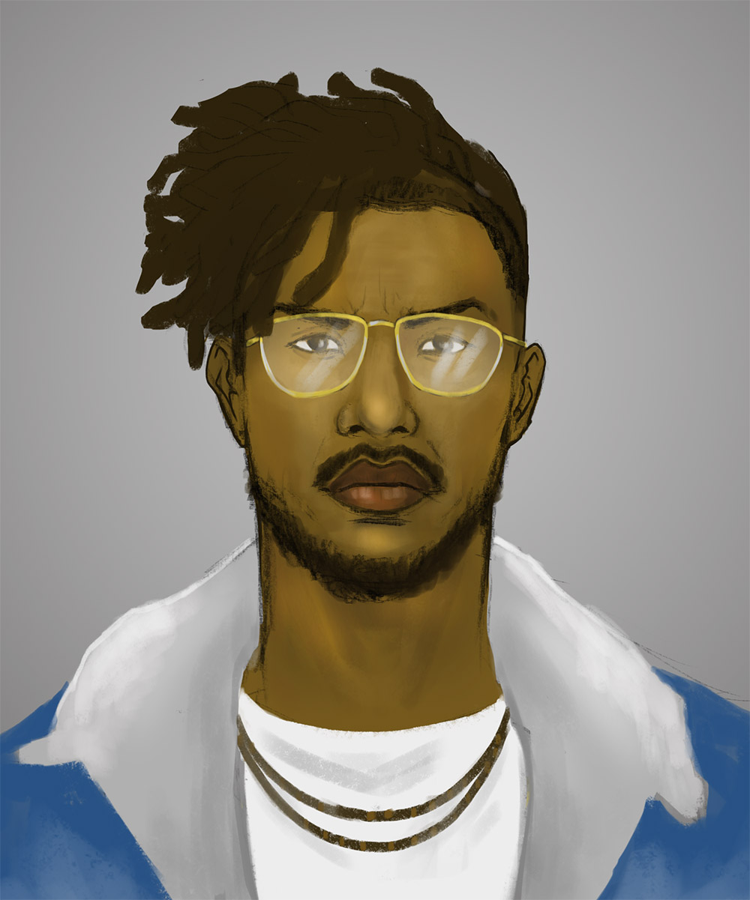Erik Killmonger from the Black Panther movie
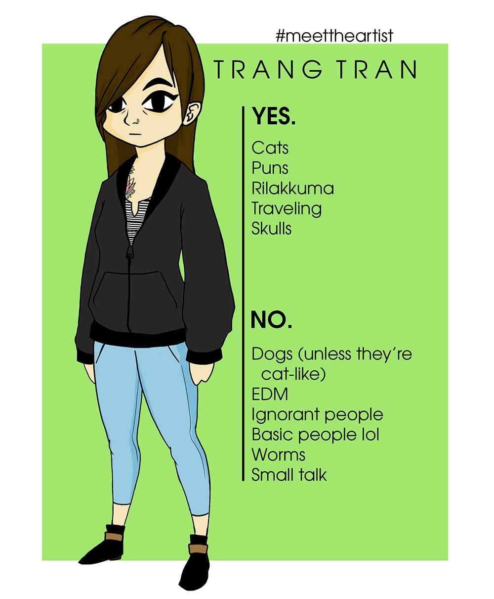My take on the "Meet the Artist" biography

A caricature I drew of my boyfriend and I